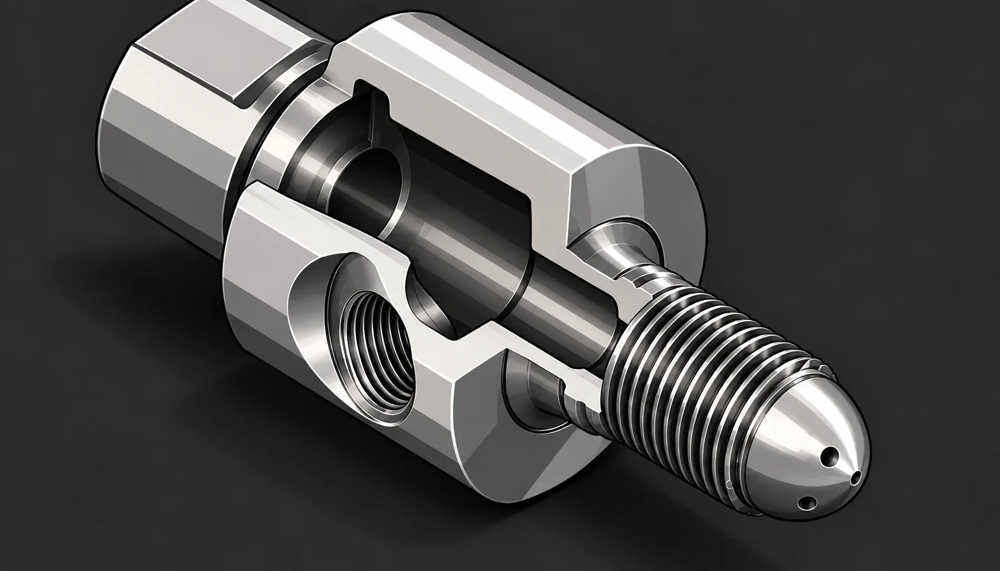
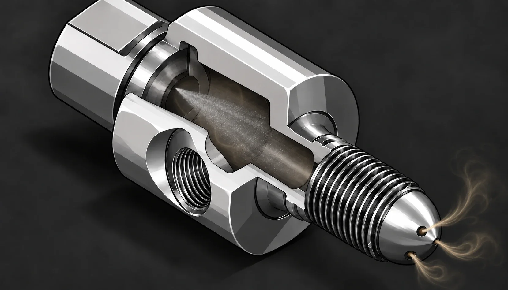
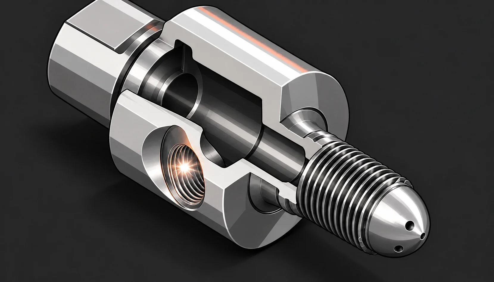
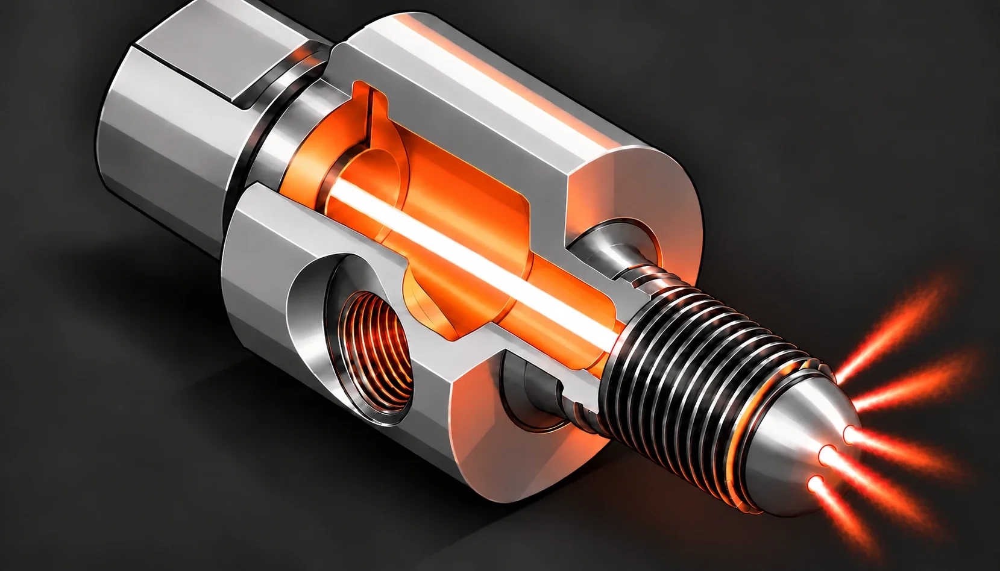
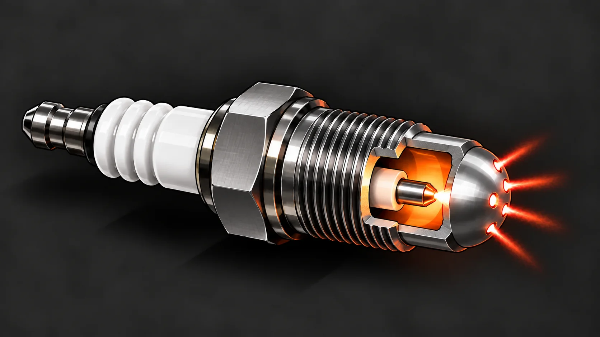
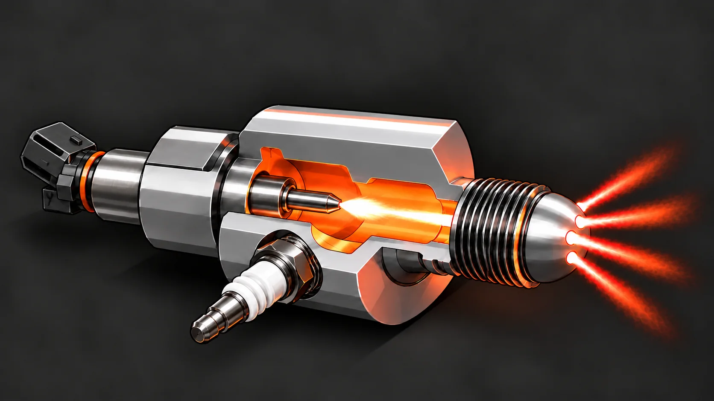
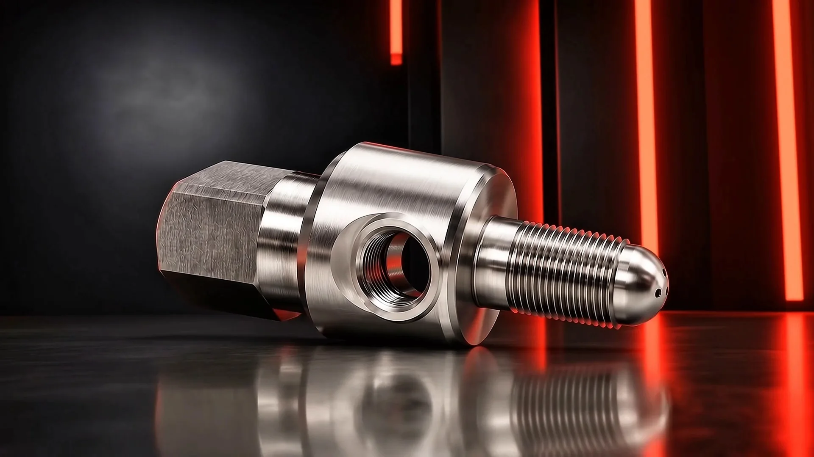
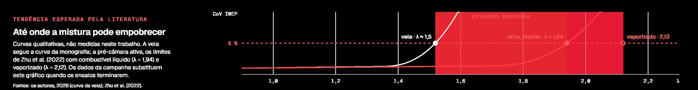
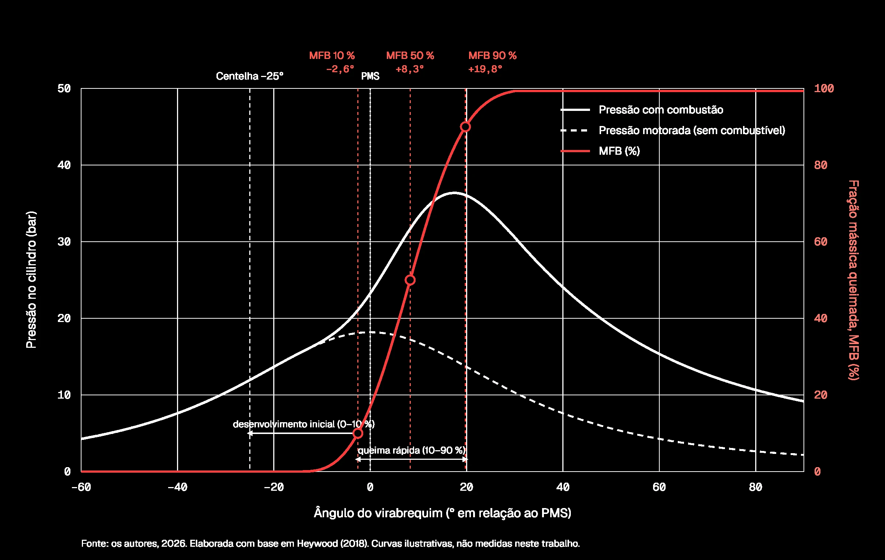

01 · O PROBLEMA
Misturas pobres rendem mais e formam menos NOx. Mas, por volta de λ = 1,50, a vela convencional já não as inflama de forma estável.
λ 1,50Limite da velaHeywood (2018); Zhu et al. (2022)
EM 90 SEGUNDOS
01 · O PROBLEMA
Misturas pobres rendem mais e formam menos NOx. Mas, por volta de λ = 1,50, a vela convencional já não as inflama de forma estável.
02 · A IDEIA
Uma pequena câmara, com vela e injetor próprios, dispara jatos de gás quente que acendem a mistura em vários pontos ao mesmo tempo.
03 · O QUE FIZEMOS
Projetamos uma pré-câmara ativa para a sede da vela de um Honda GX160, convertemos o motor para gestão eletrônica e preparamos a bancada, a etanol.
CAPÍTULO 01
Operar com excesso de ar eleva o rendimento térmico e reduz a formação de óxidos de nitrogênio, mas a combustão se torna instável à medida que a mistura empobrece (Alvarez et al., 2018; Heywood, 2018).
λ = 1,00 Mistura estequiométrica.
Com a quantidade de ar exata para queimar o combustível, o fator lambda vale 1. É a condição de referência do motor: a temperatura de chama é alta e as emissões de óxidos de nitrogênio ficam próximas do máximo.
Heywood (2018)
λ ≈ 1,25 Mais ar, mais rendimento.
O excesso de ar eleva a razão entre os calores específicos da carga, reduz as perdas de calor para as paredes e diminui as perdas por bombeamento em carga parcial. O rendimento térmico sobe e a formação de NOx cai.
Alvarez et al. (2018); Heywood (2018)
λ ≈ 1,50 O limite da vela convencional.
A chama se propaga mais devagar e a combustão passa a variar de um ciclo para outro. Quando o coeficiente de variação da pressão média efetiva indicada ultrapassa 5 %, surgem falhas de combustão e a operação deixa de ser estável.
A combustão passa a variar de um ciclo para outro; acima de 5 % de CoV de IMEP, surgem falhas.
Heywood (2018); Zhu et al. (2022)
λ → 1,70 Estender o limite.
É o papel da pré-câmara: inflamar a carga principal em vários pontos para deslocar o limite de operação estável para misturas mais pobres. Com pré-câmara ativa alimentada por gasolina vaporizada, o limite chegou a λ = 2,12 pelo critério de 5 %.
Zhu et al. (2022)
CAPÍTULO 02
A pré-câmara é um pequeno volume acoplado ao cabeçote e ligado à câmara principal por orifícios de passagem restrita. A vela é deslocada para dentro desse volume, e a centelha deixa de iniciar a combustão diretamente na câmara principal.
PASSO 1 Volume, orifícios, vela e injetor.
O volume interno, os orifícios de comunicação e o eletrodo da vela definem a arquitetura básica. Na configuração ativa soma-se um injetor dedicado. No arranjo em Y, usual em pré-câmaras ativas, a vela ocupa um ramo lateral e o injetor, o eixo do componente.
Zhu et al. (2022)
PASSO 2 Enchimento.
O avanço do pistão força parte da carga da câmara principal para dentro da pré-câmara pelos orifícios, pressurizando-a e gerando ali um campo turbulento intenso. Na versão ativa, o injetor auxiliar enriquece essa carga.
Hlaing et al. (2022); Zhu et al. (2022)
PASSO 3 Ignição no volume confinado.
A centelha inicia a combustão dentro da pré-câmara. O volume reduzido e a mistura levemente rica, isolada da câmara principal, favorecem uma ignição rápida e confiável.
Alvarez et al. (2018); Zhu et al. (2022)
PASSO 4 Jatos na câmara principal.
A combustão eleva a pressão da pré-câmara acima da pressão da câmara principal. A diferença expulsa gases quentes e reativos pelos orifícios, em jatos que penetram na carga e a inflamam em vários pontos ao mesmo tempo.
Gases quentes atravessam os orifícios e inflamam a carga em vários pontos ao mesmo tempo.
Hlaing et al. (2022); Zhu et al. (2022)




5 orifícios ⌀1,0 mm · 20°
SÍNTESE
A relevância do arranjo está no desacoplamento entre a ignição e a propagação da chama: a centelha atua em um ambiente favorável, e a carga principal, ainda que muito pobre, é inflamada por jatos distribuídos.
CAPÍTULO 03
A distinção está no modo de alimentação do volume auxiliar. Dela dependem a mistura no instante da centelha, a robustez dos jatos e a faixa de operação do sistema (Zhu et al., 2022).


PASSIVA
ATIVA ESTE TRABALHO
CAPÍTULO 04
Equipes de Fórmula 1 utilizam a ignição por jato turbulento com pré-câmara desde 2015, quando a tecnologia ainda não era empregada comercialmente (Alvarez et al., 2018).
2015NA FÓRMULA 1
ORIGEM Criada para a competição.
A versão passiva do MAHLE Jet Ignition teve seu primeiro programa e sua primeira vitória no automobilismo.
Bunce (2022); Bassett et al. (2026)
MOTORES DE SÉRIE Da pista à rua.
Velas com pré-câmara passiva elevaram o rendimento efetivo em até dois pontos percentuais.
Blankmeister et al. (2026); Korkmaz et al. (2026)
ALTO DESEMPENHO No hipercarro híbrido.
Num V12 híbrido de produção limitada, as pré-câmaras reduziram a variação entre ciclos de 1,9 % para 1,0 %.
Bassett et al. (2026)
Imagem ilustrativa do carro.

Modelo 3D a partir do CAD dos autores. Arraste para girar.
CAPÍTULO 05
Projetada pelos autores e modelada em CAD até a revisão V4 do desenho de fabricação: um corpo de revolução usinado em aço inoxidável AISI 304.
CAPÍTULO 06
Antes da fabricação em metal, o projeto foi validado por prototipagem rápida. O cabeçote foi usinado para alojar a pré-câmara e o injetor, e o motor foi convertido de carburador e magneto para gestão eletrônica de injeção e ignição.
Imagens ilustrativas a partir de fotos dos autores — toque numa fase para ver a foto original. Fonte: os autores, 2026.
CAPÍTULO 07
Os ensaios comparam a ignição por vela e a pré-câmara ativa no mesmo motor, nas mesmas condições de rotação e carga. Os resultados serão incluídos ao fim da campanha experimental.
Maior λ com combustão estável em cada configuração, pelo critério de CoV da IMEP de 5 %.
RESULTADO PENDENTE
CoV da IMEP ao longo da varredura de λ, sobre algumas centenas de ciclos consecutivos.
RESULTADO PENDENTE
Trabalho indicado por ciclo dividido pela energia do combustível admitido nas duas câmaras.
RESULTADO PENDENTE
Durações de 0 a 10 % e de 10 a 90 % da massa queimada e CA50, a partir da taxa de liberação de calor.
RESULTADO PENDENTE


ORIENTADOR Prof. Dr. Clayton Barcelos Zabeu in
O que achou do site? Avalie e sugira melhorias. Leva cerca de 2 minutos e é anônimo.
Avaliar o siteTrabalho de Conclusão de Curso em Engenharia Mecânica · Centro Universitário do Instituto Mauá de Tecnologia · São Caetano do Sul, 2026